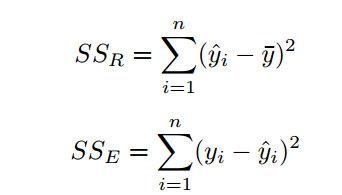

Ethereum and ERC20
Ethereum is a decentralized platform that runs smart contracts: applications that run exactly as programmed without any possibility of downtime, censorship, fraud or third-party interference
The ERC20 token is a standard that describes the functions and events that an Ethereum token contract has to implement.
Primary token
I am doing this project on my own. So I will chose networktenxpayTX.txt as my primary token
target
There two main targets in this project.
Find the distribution of #users and #buys and also #users and #sells
Design an appropriate layer and compute the correlation between the layer’s feature and the #transactions
token file
In the token file, we have four columns, i.e. fromnodeID, tonodeID, unixtime and tokenamount
price file
In the price file, There are 7 columns, i.e. Date, Open Price, High Price, Low Price, Close Price, Volume, and Market Cap
Note that we will mainly focus on the Date and the low price
Preprocessing From the website coinmarketcap, I can get the maximum token amount is 1021. Thus I have evidence to filter the outliers
Distribution of #users and #buys
Number of Buys Versus Number of Users
Distribution
Discrete Distribution
The data we are dealing with has a large number of trials(number of users) and the probability of users has the same frequency is not very high. So I will assume it satisfies the Possion distribution.
since Possion distribution has the same mean and variance. Thus I can compute:
μ = 748
σ = 45063955
So it has a huge difference, which means the Poisson model would not be a good representation.
Continuous Distribution
Though we are actually dealing with discrete value. However, if we use a line to link every bar together, we will get a continuous distribution. Looking at the diagram, it looks like a exponential distribution or weibull distribution.
Exponential Distribution parameters Estimation
Here we use Maximum Log Likelihood to estimate the parameters.
So the PDF will be:
f(x) = λe − λx = 748e − 748x
Weibull Distribution parameters Estimation
The MLE of Weibull distribution is only numeral solvable, which is out of scope. So I will simply let computer to get the result for me.
Distribution of #users and #sells
Number of Buys Versus Number of Users
Distribution
Overall, Sell is quite similar to buy. Note that people can only buy but never sell. So there are couples of user have 0 number of sell
Discrete Distribution
The data we are dealing with has a large number of trials(number of users) and the probability of users has the same frequency is not very high. So I will assume it satifies the Possion distribution.
since Possion distribution has the same mean and variance. Thus I can compute:
μ = 567
σ = 2185739
So it has a huge difference, which means the Poisson model would not be a good representation.
Continuous Distribution
Though we are actually dealing with discrete value. However, if we use a line to link every bar together, we will get a continuous distribution. Looking at the diagram, it looks like a exponential distribution or weibull distribution.
Exponential Distribution parameters Estimation
Here we use Maximum Log Likelihood to estimate the parameters.
So the PDF will be:
f(x) = λe − λx = 567e − 567x
Weibull Distribution parameters Estimation
The MLE of Weibull distribution is only numeral solvable, which is out of scope. So I will simply let computer to get the result for me.
Layer Design
In this question, we are aiming to predict the token price using the data we have. An interesting approach is to split the data into different layers (which can have different weights and different features).
Here we will split the data into 20 layers based on the percentage of maximum amount the transactions involve in. That is, the first layer will contain those date have [0,1021/20 = ] transactions and the second layer will contain those date have [1021/20,1021/20 * 2] and so on.
Thus, we can compute the Pearson Correlation between the price data (in the specific date) and number of transaction (in the same specific date) in the specific ith layer.
The result shows that our max Pearson Correlation among all 20 layers is 0.4426604770891175 and the min is -0.09401985813672055.
I then tried to draw the diagram shows the relation between number of transaction and price data of the max Pearson Correlation Layer.
As we can see from the diagram, the red line (price) and the blue line (number of transaction, i.e. feature of the layer) does have strong relation
Multi Regression
Analysis
From the layer design section, we come to know that in some of the layer, number of transaction has a high(0.44) corelation with the price. However, it does not necessary means any causality, nor necessary means the number of transaction is a good feature.
Therefore, I will do the multi regression to see whether the number of transaction is good feature. In order to augment the feature, I do some transfers of it: square and square root
Metric
Residual
ξi = yi − ŷi
Coefficient of determination: R2
where

SSE = ∑i = 1n(yi − ŷi)2
SST = SSR + SSE
Result
Prediction
We will use the three features in t-1 day to predict the price at day t. I will show the prediction v.s. true price diagram based on the layer with max R2 value
As the diagram shows, the prediction is not very good (in terms of residual and R2). That’s reasonable since the maximum is only R2=0.332810699. On the other hand, our feature is still very simple and only chain feature and without using any price feature.
R2 and Pearson
As the diagram shows, we have the maximum R2=0.332810699 and minimum R2=0.006885197. We can see overall the pearson and the R2 are the similar trend while it does not hold for the very first and the very last point. That’s reasonable because we are high pearson does not equal to good feature
Price is always the important factor that impact people buy or sell something. That’s intuitive understanding is confirmed by the layer design experiment. Also, most people tend to buy or sell too much, most likely [0,15]. I think that’s very interesting because we are using the statistic way to analysis the market, people and even try to make some predictions
Outlier
I cannot find obvious outlier in my data. Thus I remove the outlier section
Package
I am using Python to do the analysis. Package includes Numpy, matplotlib. See the question1.py and question2.py (10/24/2018 Attempt) and question3.py (11/30/2018 Attempt) and also the comments for more programing detail
Publishing
I also upload the report in the address: https://github.com/BCD2018/dsproject
Blockchain: a graph primer (https://arxiv.org/abs/1708.08749)